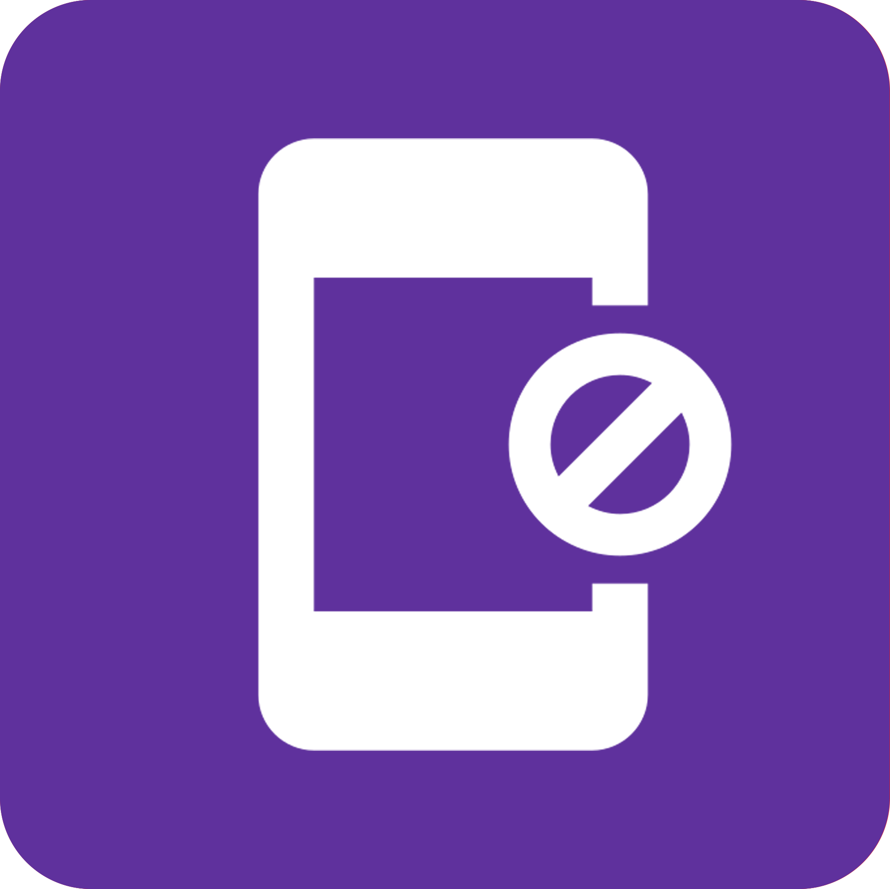
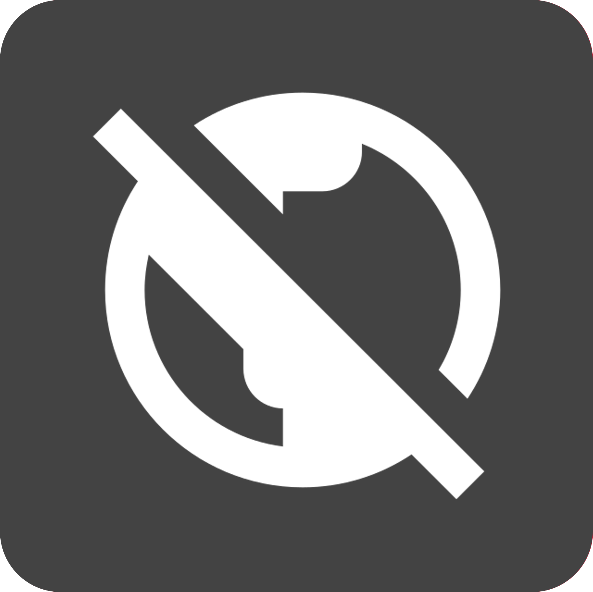

TOP
Q & A
トライアル
メンバーシップ
Q
&
A
初めてのお客様
会員登録について
ご契約の再会
お支払い
アカウント設定
視聴可能な
デバイス
機能について

視聴に関する
問題や不具合

解約について
その他
TELEPORTとは？
+
TELEPORTは、世界中どこからでもハイビジョン映像で日本のテレビ番組を視聴できる、会員登録制のサービスです。 インターネットに接続できる環境であれば、日本以外の国からいつでも視聴が可能です。※日本国内での視聴はできません。詳しくはTELEPORTの機能をご覧ください。
どうやって視聴するのですか？
+
会員登録後、インターネットに接続したiPhone・iPad・Androidスマートフォン・タブレット・パソコン（Windows・Mac）で視聴が可能です。
24時間トライアルとは何ですか？
+
会員登録前に、24時間無料で視聴をお試しできるサービスです。24時間トライアルからお申し込みいただけます。トライアルでは、視聴可能な画面サイズに制限がございますのでご了承ください。なお、トライアル期間中でもTELEPORTに登録するから、いつでも会員登録が可能です。 インターネットに接続できる環境であれば、日本以外の国からいつでも視聴が可能です。※日本国内での視聴はできません。詳しくはTELEPORTの機能をご覧ください。
24時間トライアルに申し込みができません。
+
24時間トライアルにお申し込みができない場合、以下の点をご確認ください。
1. すでにトライアルを利用していないか 24時間トライアルは、1アカウントにつき1回限りのサービスです。過去に申し込んでいる場合、再度の利用はできません。
2. 登録情報に誤りがないか メールアドレスの入力間違いがないかご確認ください。
3. ネットワーク環境を確認 一時的な通信障害やネットワークの問題で申し込みが完了しないことがあります。Wi-Fiやモバイル回線の接続状況をご確認ください。
4. 迷惑メールフォルダを確認 申し込み完了のメールが迷惑メールフォルダに振り分けられている場合があります。
上記を試しても解決しない場合は、カスタマーサポートまでご連絡ください。 インターネットに接続できる環境であれば、日本以外の国からいつでも視聴が可能です。※日本国内での視聴はできません。詳しくはTELEPORTの機能をご覧ください。
プランについて教えてください。
+
TELEPORTは、世界中どこからでもハイビジョン映像で日本のテレビ番組を視聴できる、会員登録制のサービスです。 インターネットに接続できる環境であれば、日本以外の国からいつでも視聴が可能です。※日本国内での視聴はできません。詳しくはTELEPORTの機能をご覧ください。
支払い方法を教えてください。
+
クレジットカードでのお支払いのみ対応しております。
途中解約での返金はありますか？
+
お客様都合による解約の返金は対応しておりません。 インターネットに接続できる環境であれば、日本以外の国からいつでも視聴が可能です。※日本国内での視聴はできません。詳しくはTELEPORTの機能をご覧ください。
新規登録の流れについて教えてください。
+
TELEPORTへの新規登録はTELEPORTに登録するから行うことができます。
過去に登録したことのあるお客様は、新規登録の必要はございません。視聴を再開したいのご確認をお願いします。
登録が完了できません。
+
登録が完了できない場合、以下の点をご確認ください。
1. 入力情報に誤りがないかご確認ください メールアドレスの入力間違いがないかご確認ください。
2.すでに登録済みの可能性 以前に同じメールアドレスで登録していないかご確認ください。もしパスワードを忘れた場合は、パスワードのリセットをお試しください。
3.クレジットカード情報に不備がないかご確認ください。 有効期限やカード番号の入力ミスがないか、カードの利用可能状態などをご確認ください。
上記を試しても登録できない場合は、カスタマーサポートにご連絡ください。
登録時に「ご入力いただいたメールアドレスは既に使用されています。」と表示されます。
+
既にアカウントの登録が行われています。ログインページからメールアドレスとパスワードを入力し、ログインを行ってください。
パスワードを忘れた場合は、パスワードを変更/確認したいをご確認ください。
以前TELEPORTをご利用されたことのある場合、解約されているアカウントにログインをし、契約再開のお手続きをいただくことで視聴が可能です。詳しくは、視聴を再開したい をご確認ください。
視聴を再開したい。
+
解約されているアカウントにログインをし、契約再開のお手続きをいただくことで視聴が可能です。
利用できる支払い方法を教えてください。
+
クレジットカードでのお支払いのみ対応しております。
利用できる支払い方法を教えてください。
+
クレジットカードでのお支払いのみ対応しております。
毎月の請求日はいつですか？
+
毎月のご請求日は、ご登録いただいたお日にちにより異なります。
1月10日に登録または再開をされた場合は、1月10日に30日分(1月10日〜 2月8日まで）のご請求が発生いたします。お客様の詳しい請求日は、アカウントページにてご確認ください。
現在利用中のクレジットカードを別のカードに変更したいです。
+
アカウントページからクレジットカード情報の変更が可能です。
解約したのに請求が発生している
+
解約したのに請求が発生している場合、カスタマーサポートにて確認いたしますので、以下の情報をお送りください。
・ご登録者様のお名前
・生年月日（西暦）
・ご登録のメールアドレス
・請求が発生している日付と金額
お支払いが完了できず、視聴が止まってしまいました。
+
有効なお支払い情報へ更新後、請求の確認が取れ次第、アカウントが有効な状態になります。 ※請求の確認が取れない原因は、クレジットカード会社にご確認をお願いします。
以下の方法でお支払い情報を更新してください。
1. アカウントページにアクセスをして、登録の メールアドレスとパスワードでログインします
2. アカウントページ内［決済情報を更新する］ボタンを押します
領収書は発行できますか？
+
いいえ、領収書の発行はしておりません。 ご登録のクレジットカードのご利用明細を領収書の代わりにご利用ください。 または アカウントページ 内の「支払履歴を確認する」から、現在までに発生している請求を確認できます。
身に覚えのない請求がある/二重請求されている
+
身に覚えのない請求がある/二重請求されている場合、カスタマーサポートにて確認いたしますので、以下の情報をお送りください。
・ご登録者様のお名前
・生年月日（西暦）
・ご登録のメールアドレス
・請求が発生している日付と金額
プランを変更したい
+
パスワードを変更/確認したい
+
アカウント情報を更新したい
+
アカウント情報を更新したい
メールアドレスを変更したい
+
メールアドレスを変更したい
視聴可能期間を確認したい
+
アカウントページ 内の「ご契約期間」から、確認できます。
パスワードを忘れた
+
パスワードを忘れた
ログインできない
+
ログインできない
TELEPORTからのメールが届かない
+
TELEPORTからのメールが届かない
対応デバイス
+
インターネットに接続したiPhone・iPad・Androidスマートフォン・タブレット・パソコン（Windows・Mac）で視聴が可能です。
パソコンでTELEPORTを視聴する
+
●画像で説明
再生中の操作方法
+
●画像で説明
スマートフォン・タブレットでTELEPORTを視聴する
+
●画像で説明
再生中の操作方法
+
●画像で説明
Airplayを使って視聴する
+
AirPlay を使い、iPhone／iPad／iPod touch から Apple TV に映像を映して視聴できます。 ●画像で説明(以下参考) https://help.hulu.jp/hc/ja/articles/360044685773--iPhone-iPad-iPod-touch-AirPlay-を使ってHuluを視聴する
TVで見るにはどうしたら良いですか？
+
●画像で説明
日本国内で視聴することは可能ですか？
+
日本国内で視聴することはできません。
視聴できない国・地域はありますか？
+
スマートフォン、タブレット、パソコンからケーブルを経由してテレビ等への出力はできますか？
+
必要な回線速度を教えてください
+
インターネットの場合は下り800kbps、モバイル通信の場合は5Gで快適にご視聴いただけます。速度の計測は下記サイトで行えます。http://www.speedtest.net/
複数の端末で視聴できますか？
+
1つのアカウントで様々な端末での視聴は可能ですが、複数端末で同時にログインすることはできません。
スマートフォンで視聴した場合の通信量はどのくらいですか？
+
視聴時間にもよりますので、データ制限プランをご契約の方はWi-Fiでのご利用をお勧めします。
リアルタイム視聴とは何ですか？
+
海外に居ながら、日本で放送されている番組をリアルタイムで視聴できるサービスです。※日本国内での視聴はできません。
リアルタイム視聴をする
+
●画像で説明
見たい番組を探す
+
●画像で説明
リアルタイム視聴はお気に入りに追加できますか？
+
できません。お気に入り機能はTIME SHIFTにのみ対応しております。
視聴予約はできますか？
+
視聴予約はできません。見逃してしまった番組は、ぜひTIME SHIFT機能をご利用ください。
※TIME SHIFTは、自動録画機能により、TELEPORTの全チャンネル全番組（地上波8ch / BS4ch）を過去5日間遡って視聴できる機能です。
TIME SHIFTとは何ですか？
+
TIME SHIFTは、自動録画機能により、TELEPORTの全チャンネル全番組（地上波8ch / BS・CS8ch）を過去5日間遡って視聴できる機能です。5日間を過ぎると自動的に削除されます。
TIME SHIFTを視聴する
+
●画像で説明
TIME SHIFTで見たい番組を探す
+
●画像で説明
お気に入り機能
+
TIME SHIFTでは、気になる番組をお気に入りに登録することができます。
録画することはできますか？
+
できません。自動録画（TIME SHIFT）機能により、TELEPORTの全チャンネル全番組（地上波8ch / BS4ch）を過去5日間遡って視聴できますので、そちらをご利用ください。
1つのアカウントで同時視聴は可能ですか？
+
1つのアカウントで様々な端末での視聴は可能ですが、複数端末で同時にログインすることはできません。
視聴ができない
+
ログイン後に視聴ができない場合、アカウントページから、お支払いが完了しているかご確認ください。 お支払いが完了している場合、以下の方法をお試し下さい。
1.IPhone・スマートフォンでご視聴の場合 Wi-Fiでご利用の場合は、5G通信に切り替えてご確認下さい。5G通信でご利用の場合、ブラウザを一旦閉じて、お試し下さい。
2.パソコンでご視聴の場合 Wi-Fiでご利用の場合は、LANケーブルでの接続をお試し下さい。また、ブラウザのアップデート、パソコンの再起動もお試し下さい。
それでも視聴ができない場合は、カスタマーサポートにて確認いたしますので、以下の情報をお送りください。
・ご登録者様のお名前
・生年月日（西暦）
・ご登録のメールアドレス
※日本国内での視聴はできませんのでご注意ください。
エラーコード
+
エラーコードの表示/対応策がある場合は記載 *要確認
解約したい
+
解約後の視聴可能期間について
+
解約について
それでも解決しない場合
+
お問い合わせの前に、よくある質問をご確認ください。解決しない場合は、こちらからお問い合わせ内容を送信してください。カスタマーサポート担当者が順次対応いたします。返信には数日かかる場合がございますので、予めご了承くださいませ。
カスタマーサポート営業時間
10時〜19時（JST） 土日祝日を除く
名前
*
会社名
(屋号)
メールアドレス
*
電話番号
*
問い合わせ内容
*
送信する